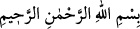

RABBİN SENİ BIRAKMADI
VE SANA DARILMADI
Bismillâhirrahmânirrahîm
1. Kuşluk vaktine
2. Ve sükûna erdiğinde geceye yemin ederim ki
3. Rabbin seni bırakmadı ve sana darılmadı.
4. Gerçekten senin için âhiret dünyadan daha hayırlıdır.
5. Pek yakında Rabbin sana verecek de hoşnut olacaksın.
“Kuşluk vaktine” Okuduğumuz bu âyette yer alan “duha” güneşin yükseldiği vakit ve
gündüzün ortasına doğru yaklaşan süre demektir. Burada “duha” kelimesiyle mecazen o
vakit kasdedilmektedir. Mecazın alakası ise, “hulul ve zarfiyet”tir. Çünkü zaman, kendi
içinde yer alan şeyin zarfı mesâbesindedir. Okuduğumuz bu âyeti mecaz olarak anlamak
mümkün olduğu gibi kelimenin başına bir muzaf takdir ederek anlamak da mümkündür.
Sözünü ettiğimiz bu mecâzîlik ve hazf, ifâdenin bundan sonra gelen “leyl” kelimesine
uygun düşmesi içindir.
Âlimlerin ifâdesine göre bir günün özellikle kuşluk vaktinin seçilerek bunun üzerine
yemin edilmesinin sebebi kuşluk vaktinin Allah Teâlâ’nın Hz. Mûsâ ile konuştuğu ve
sihirbazların Allah’a secde ettikleri vakit olmasıdır. Sihirbazların secde ettiklerini şu
âyet-i kerimeden anlıyoruz: “Mûsâ: Buluşma zamanımız, bayram günü, kuşluk
vaktinde insanların toplanma zamanı olsun dedi.” (Taha, 20/59) İşte sıraladığımız bu
sebeplerden dolayı kuşluk vaktinin hem şerefi ve hem de yeminin maksadına uygunluğu
söz konusudur. Ayrıca duhâ/kuşluk namazı âlimlerin ittifakı ile ifâde ettiklerine göre
sünnet bir namazdır. Vakti güneşin yükselişinden zeval vaktinden biraz öncesine kadar
olan vakittir. Kuşluk namazı İmam Ebû Hanife’ye göre iki veya dört rekattır. Dört rekat
kılındığında selam sâdece dördüncü rekatın sonundadır. İmam Malik’e göre kuşluk
namazının belli bir rekatı yoktur. Kişi dilediği kadar kılabilir. İmam Şafii ve Ahmed’e
göre kuşluk namazının en azı iki rekattır, en çok ne kadar kılınabileceği noktasında
âlimlerin ihtilafı vardır. İmam Şafii’ye göre en çok oniki rekat kılınır. İmam Ahmed’in